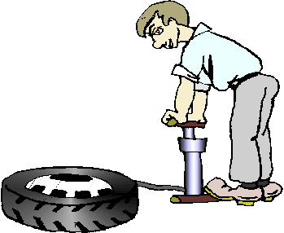

Question 2
Typical tire pressure for compact size cars can be about 220 kPa.

Air is composed of 21 % oxygen.
What is the partial pressure of oxygen gas in car tires?
A) 46.2 kPa
B) 110 kPa
C) 172 kPa
D) 220 kPa